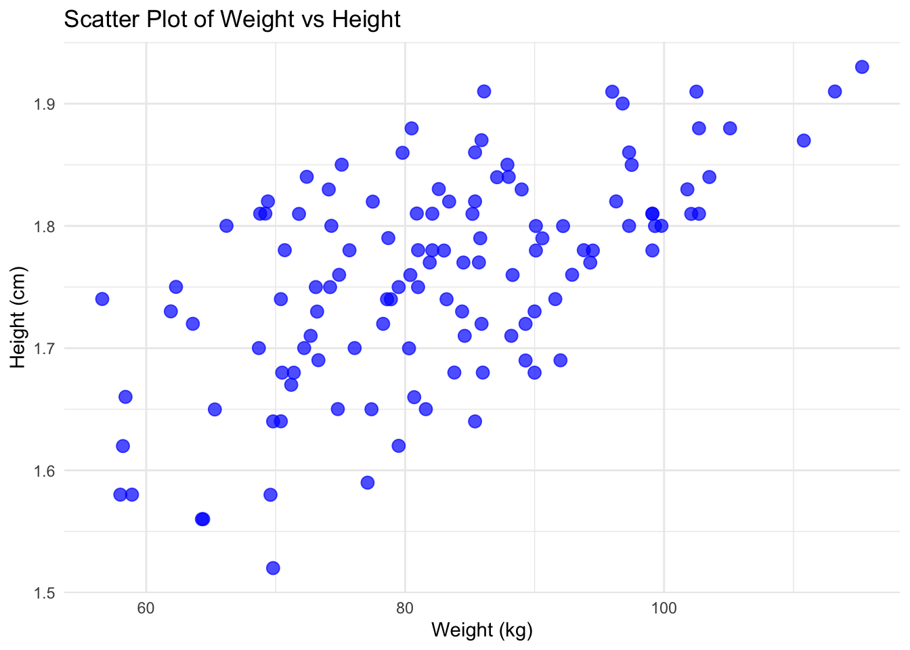
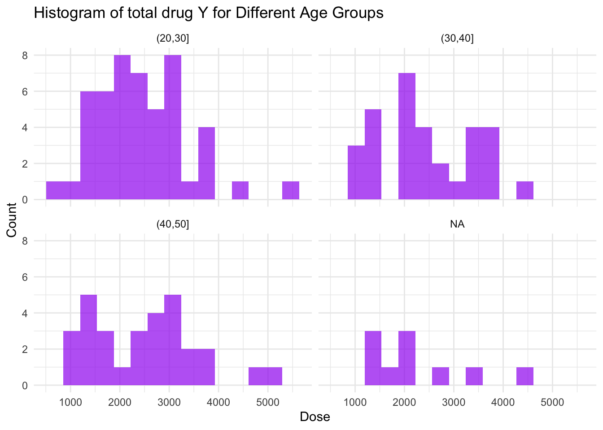
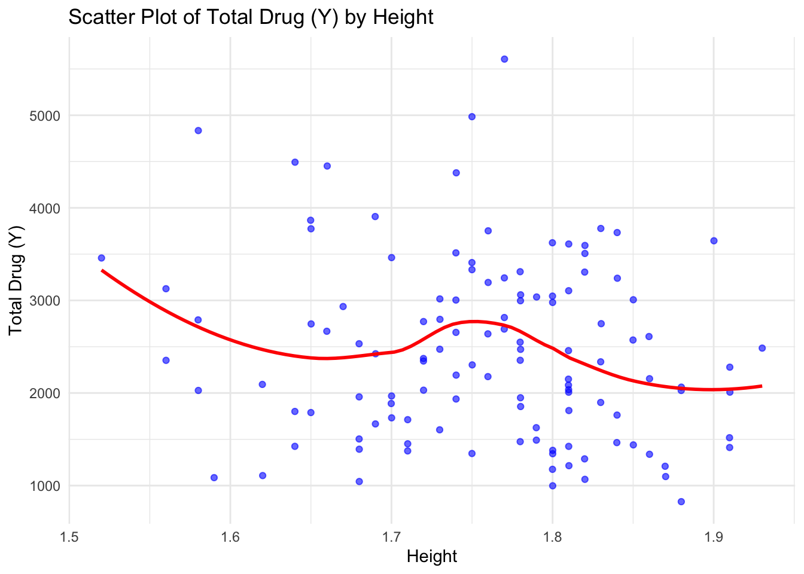
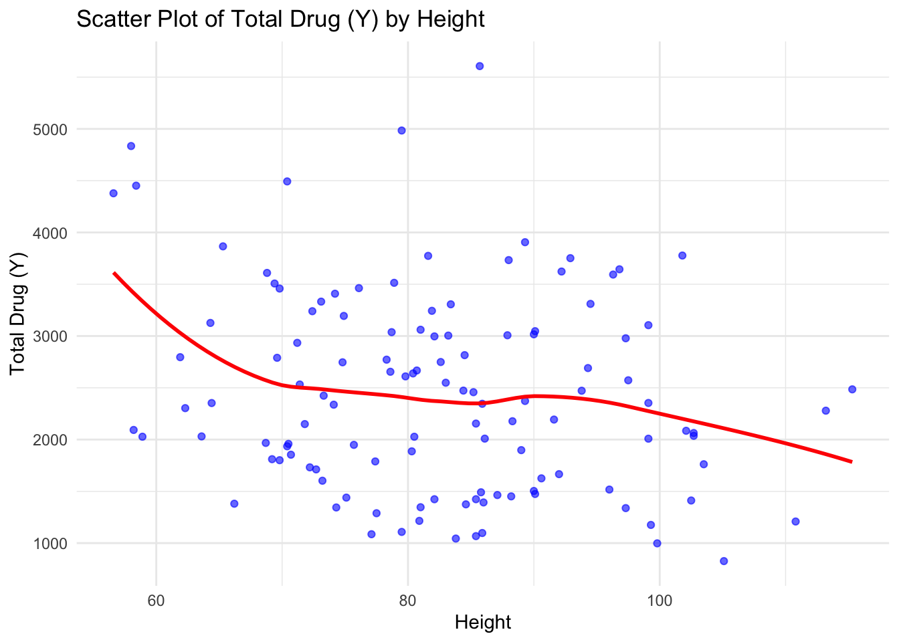
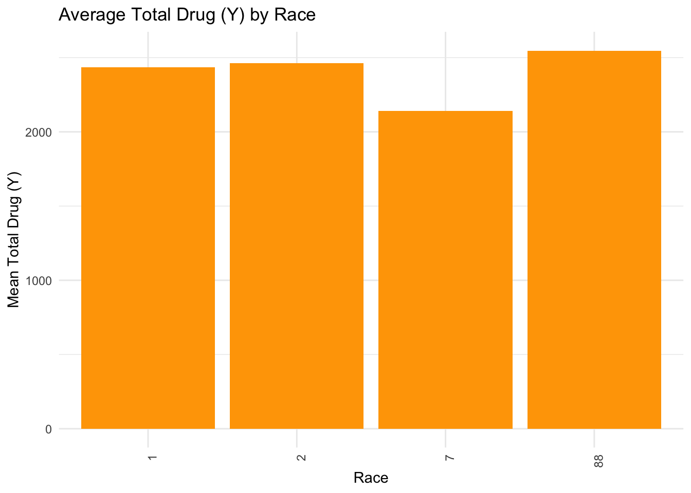
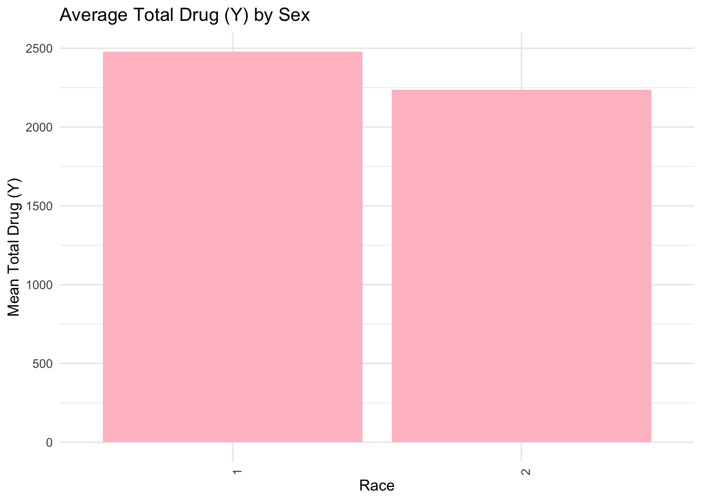
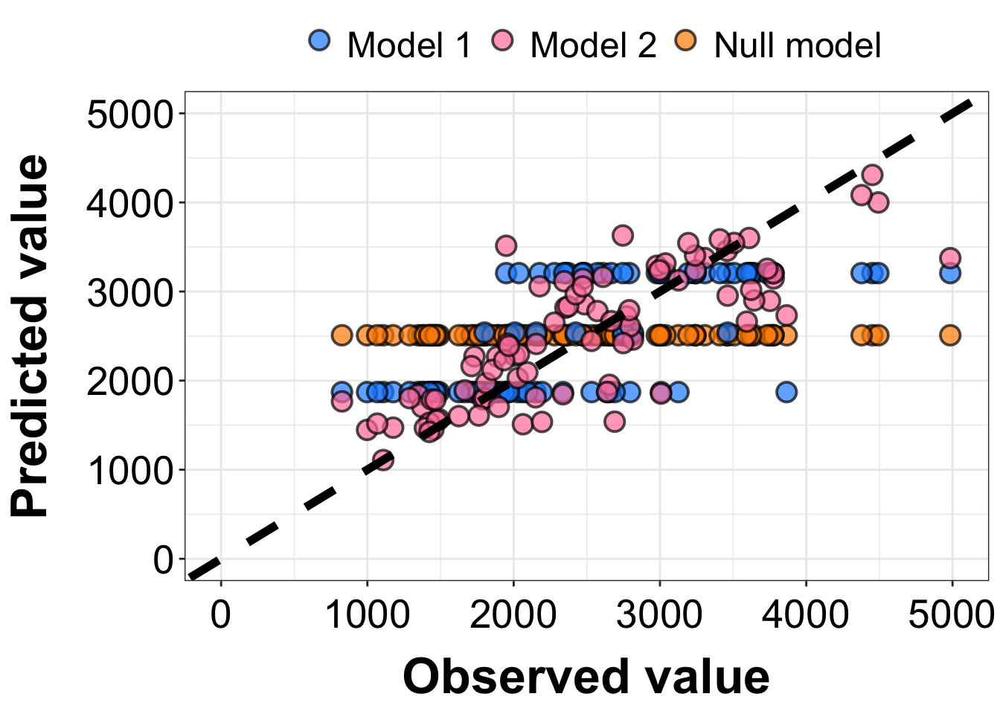
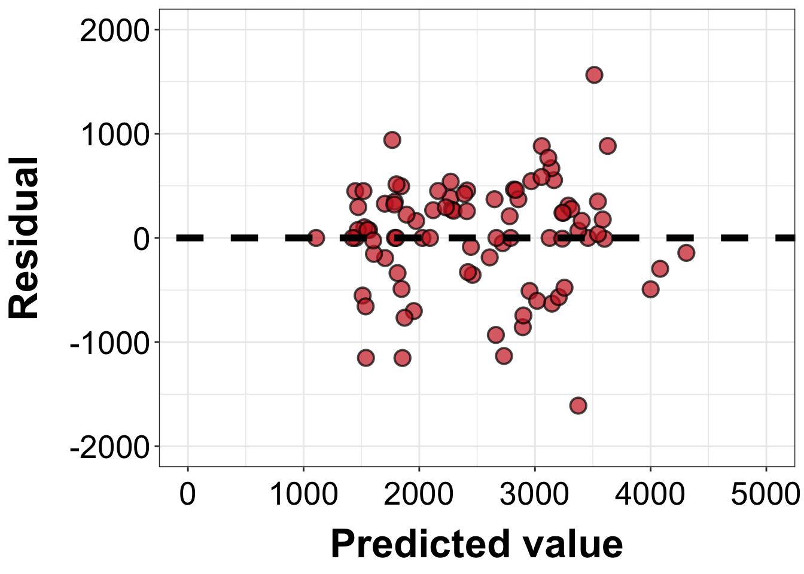
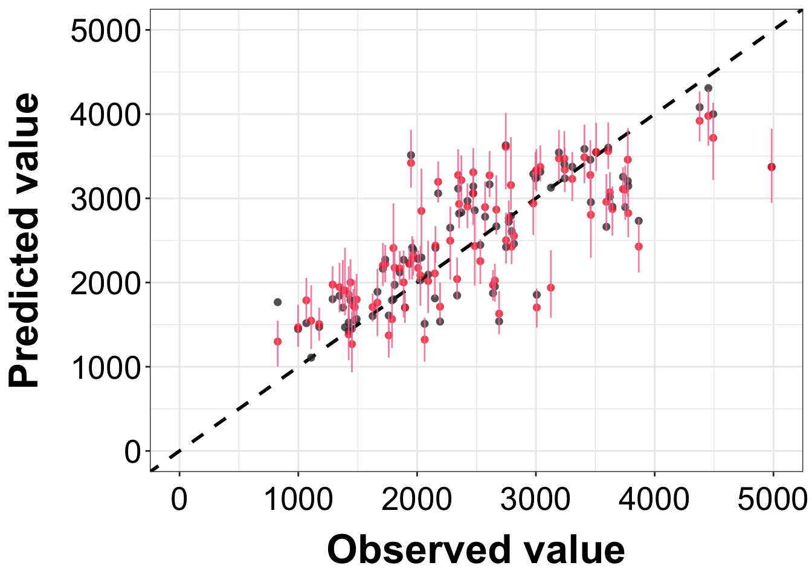

ID CMT EVID EVI2
Min. :793.0 Min. :1.000 Min. :0.00000 Min. :0.0000
1st Qu.:832.0 1st Qu.:2.000 1st Qu.:0.00000 1st Qu.:0.0000
Median :860.0 Median :2.000 Median :0.00000 Median :0.0000
Mean :858.8 Mean :1.926 Mean :0.07394 Mean :0.1613
3rd Qu.:888.0 3rd Qu.:2.000 3rd Qu.:0.00000 3rd Qu.:0.0000
Max. :915.0 Max. :2.000 Max. :1.00000 Max. :4.0000
MDV DV LNDV AMT
Min. :0.00000 Min. : 0.00 Min. :0.000 Min. : 0.000
1st Qu.:0.00000 1st Qu.: 23.52 1st Qu.:3.158 1st Qu.: 0.000
Median :0.00000 Median : 74.20 Median :4.306 Median : 0.000
Mean :0.09373 Mean : 179.93 Mean :4.085 Mean : 2.763
3rd Qu.:0.00000 3rd Qu.: 283.00 3rd Qu.:5.645 3rd Qu.: 0.000
Max. :1.00000 Max. :1730.00 Max. :7.456 Max. :50.000
TIME DOSE OCC RATE
Min. : 0.000 Min. :25.00 Min. :1.000 Min. : 0.00
1st Qu.: 0.583 1st Qu.:25.00 1st Qu.:1.000 1st Qu.: 0.00
Median : 2.250 Median :37.50 Median :1.000 Median : 0.00
Mean : 5.851 Mean :37.37 Mean :1.378 Mean : 16.55
3rd Qu.: 6.363 3rd Qu.:50.00 3rd Qu.:2.000 3rd Qu.: 0.00
Max. :48.217 Max. :50.00 Max. :2.000 Max. :300.00
AGE SEX RACE WT
Min. :18.0 Min. :1.000 Min. : 1.000 Min. : 56.60
1st Qu.:26.0 1st Qu.:1.000 1st Qu.: 1.000 1st Qu.: 73.30
Median :31.0 Median :1.000 Median : 1.000 Median : 82.60
Mean :32.9 Mean :1.128 Mean : 7.415 Mean : 83.16
3rd Qu.:40.0 3rd Qu.:1.000 3rd Qu.: 2.000 3rd Qu.: 90.60
Max. :50.0 Max. :2.000 Max. :88.000 Max. :115.30
HT
Min. :1.520
1st Qu.:1.710
Median :1.780
Mean :1.762
3rd Qu.:1.820
Max. :1.930
#Plotting DV by time and stratisfying by dose for each person
ggplot(drug_data, aes(x = TIME, y = DV, group = ID, color =as.factor(DOSE))) +geom_line(alpha =0.7) +labs(x ="TIME", y ="DV", color ="DOSE") +theme_minimal() +theme(legend.position ="top")
#Summary Figures #####plotting WT vs HT in a scatter plot
ggplot(drug_data_final, aes(x = WT, y = HT)) +geom_point(color ="blue", size =3, alpha =0.7) +labs(title ="Scatter Plot of Weight vs Height",x ="Weight (kg)",y ="Height (cm)") +theme_minimal()

#Distribution of dose across ages
ggplot(drug_data_final, aes(x = Y)) +geom_histogram(fill ="purple", bins =15, alpha =0.7) +facet_wrap(~cut(AGE, breaks =seq(20, 80, by =10))) +# Group age into binslabs(title ="Histogram of total drug Y for Different Age Groups",x ="Dose",y ="Count") +theme_minimal()

#Distribution of Y by HT and WT
ggplot(drug_data_final, aes(x = HT, y = Y)) +geom_point(color ="blue", alpha =0.6) +geom_smooth(method ="loess", color ="red", se =FALSE) +labs(title ="Scatter Plot of Total Drug (Y) by Height",x ="Height",y ="Total Drug (Y)") +theme_minimal()
`geom_smooth()` using formula = 'y ~ x'

#WT
ggplot(drug_data_final, aes(x = WT, y = Y)) +geom_point(color ="blue", alpha =0.6) +geom_smooth(method ="loess", color ="red", se =FALSE) +labs(title ="Scatter Plot of Total Drug (Y) by Height",x ="Height",y ="Total Drug (Y)") +theme_minimal()
`geom_smooth()` using formula = 'y ~ x'

#Distribution of Y by Race
ggplot(drug_data_final, aes(x =factor(RACE), y = Y)) +stat_summary(fun = mean, geom ="col", fill ="orange") +labs(title ="Average Total Drug (Y) by Race",x ="Race",y ="Mean Total Drug (Y)") +theme_minimal() +theme(axis.text.x =element_text(angle =90, hjust =1))

#Y by Sex
ggplot(drug_data_final, aes(x =factor(SEX), y = Y)) +stat_summary(fun = mean, geom ="col", fill ="pink") +labs(title ="Average Total Drug (Y) by Sex",x ="Race",y ="Mean Total Drug (Y)") +theme_minimal() +theme(axis.text.x =element_text(angle =90, hjust =1))

Now I will use tidymodels to fit a linear model to Y by Dose
First i will use parsnips package to specify the model that I want to use. Since there are continouos variables this will be a linear model
lm_model <-linear_reg() %>%set_engine("lm")
#From here I can estimate the model using the fit function. I will be looking at Y ~ Dose x ID
lm_fit <- lm_model %>%fit(Y ~ DOSE, data = drug_data_final)lm_fit
parsnip model object
Call:
stats::lm(formula = Y ~ DOSE, data = data)
Coefficients:
(Intercept) DOSE
323.06 58.21
# Define a linear regression modellm_model <-linear_reg() %>%set_engine("lm")# Create a recipe (preprocessing steps, if any)lm_recipe <-recipe(Y ~ DOSE, data = drug_data_final)# Create a workflowlm_workflow <-workflow() %>%add_model(lm_model) %>%add_recipe(lm_recipe)# Fit the modellm_fit <- lm_workflow %>%fit(data = drug_data_final)
# Make predictions on test datapredictions <-predict(lm_fit, new_data = drug_data_final) %>%bind_cols(drug_data_final) # Combine predictions with actual values# Compute performance metricsmetrics <- predictions %>%metrics(truth = Y, estimate = .pred)# Print resultsmetrics
# A tibble: 3 × 3
.metric .estimator .estimate
<chr> <chr> <dbl>
1 rmse standard 666.
2 rsq standard 0.516
3 mae standard 517.
#Now I will repeat the process but I will fit the model to outcome Y using all predictors
lm_fit2 <- lm_model %>%fit(Y ~ DOSE * RATE * AGE * SEX * SEX * RACE * HT * WT, data=drug_data_final)lm_fit2
parsnip model object
Call:
stats::lm(formula = Y ~ DOSE * RATE * AGE * SEX * SEX * RACE *
HT * WT, data = data)
Coefficients:
(Intercept) DOSE
-1.670e+06 1.099e+05
RATE AGE
-1.351e+01 6.996e+04
SEX2 RACE2
-1.662e+05 -7.355e+05
RACE7 RACE88
-4.434e+03 -2.067e+04
HT WT
1.011e+06 1.857e+04
DOSE:RATE DOSE:AGE
-2.750e+02 -4.532e+03
RATE:AGE DOSE:SEX2
NA -9.367e+02
RATE:SEX2 AGE:SEX2
NA 6.684e+03
DOSE:RACE2 DOSE:RACE7
3.011e+04 1.751e+02
DOSE:RACE88 RATE:RACE2
1.209e+03 NA
RATE:RACE7 RATE:RACE88
NA NA
AGE:RACE2 AGE:RACE7
2.598e+04 NA
AGE:RACE88 SEX2:RACE2
-1.281e+02 -6.698e+03
SEX2:RACE7 SEX2:RACE88
NA 1.310e+03
DOSE:HT RATE:HT
-6.603e+04 NA
AGE:HT SEX2:HT
-4.125e+04 4.329e+04
RACE2:HT RACE7:HT
4.195e+05 NA
RACE88:HT DOSE:WT
1.476e+04 -1.230e+03
RATE:WT AGE:WT
NA -8.288e+02
SEX2:WT RACE2:WT
1.961e+02 8.861e+03
RACE7:WT RACE88:WT
NA -3.116e+01
HT:WT DOSE:RATE:AGE
-1.127e+04 1.111e+01
DOSE:RATE:SEX2 DOSE:AGE:SEX2
-2.638e+00 -5.239e+01
RATE:AGE:SEX2 DOSE:RATE:RACE2
NA -1.732e+00
DOSE:RATE:RACE7 DOSE:RATE:RACE88
NA NA
DOSE:AGE:RACE2 DOSE:AGE:RACE7
-1.005e+03 NA
DOSE:AGE:RACE88 RATE:AGE:RACE2
3.276e-01 NA
RATE:AGE:RACE7 RATE:AGE:RACE88
NA NA
DOSE:SEX2:RACE2 DOSE:SEX2:RACE7
NA NA
DOSE:SEX2:RACE88 RATE:SEX2:RACE2
NA NA
RATE:SEX2:RACE7 RATE:SEX2:RACE88
NA NA
AGE:SEX2:RACE2 AGE:SEX2:RACE7
-2.170e+02 NA
AGE:SEX2:RACE88 DOSE:RATE:HT
NA 1.640e+02
DOSE:AGE:HT RATE:AGE:HT
2.665e+03 NA
DOSE:SEX2:HT RATE:SEX2:HT
2.439e+03 NA
AGE:SEX2:HT DOSE:RACE2:HT
-2.812e+03 -1.676e+04
DOSE:RACE7:HT DOSE:RACE88:HT
NA -6.889e+02
RATE:RACE2:HT RATE:RACE7:HT
NA NA
RATE:RACE88:HT AGE:RACE2:HT
NA -1.485e+04
AGE:RACE7:HT AGE:RACE88:HT
NA NA
SEX2:RACE2:HT SEX2:RACE7:HT
9.375e+03 NA
SEX2:RACE88:HT DOSE:RATE:WT
NA 3.108e+00
DOSE:AGE:WT RATE:AGE:WT
5.373e+01 NA
DOSE:SEX2:WT RATE:SEX2:WT
4.914e+00 NA
AGE:SEX2:WT DOSE:RACE2:WT
-8.613e+00 -3.546e+02
DOSE:RACE7:WT DOSE:RACE88:WT
NA NA
RATE:RACE2:WT RATE:RACE7:WT
NA NA
RATE:RACE88:WT AGE:RACE2:WT
NA -3.048e+02
AGE:RACE7:WT AGE:RACE88:WT
NA NA
SEX2:RACE2:WT SEX2:RACE7:WT
NA NA
SEX2:RACE88:WT DOSE:HT:WT
NA 7.414e+02
RATE:HT:WT AGE:HT:WT
NA 4.875e+02
SEX2:HT:WT RACE2:HT:WT
NA -5.126e+03
RACE7:HT:WT RACE88:HT:WT
NA NA
DOSE:RATE:AGE:SEX2 DOSE:RATE:AGE:RACE2
NA 5.726e-02
DOSE:RATE:AGE:RACE7 DOSE:RATE:AGE:RACE88
NA NA
DOSE:RATE:SEX2:RACE2 DOSE:RATE:SEX2:RACE7
NA NA
DOSE:RATE:SEX2:RACE88 DOSE:AGE:SEX2:RACE2
NA NA
DOSE:AGE:SEX2:RACE7 DOSE:AGE:SEX2:RACE88
NA NA
RATE:AGE:SEX2:RACE2 RATE:AGE:SEX2:RACE7
NA NA
RATE:AGE:SEX2:RACE88 DOSE:RATE:AGE:HT
NA -6.504e+00
DOSE:RATE:SEX2:HT DOSE:AGE:SEX2:HT
NA NA
RATE:AGE:SEX2:HT DOSE:RATE:RACE2:HT
NA NA
DOSE:RATE:RACE7:HT DOSE:RATE:RACE88:HT
NA NA
DOSE:AGE:RACE2:HT DOSE:AGE:RACE7:HT
5.621e+02 NA
DOSE:AGE:RACE88:HT RATE:AGE:RACE2:HT
NA NA
RATE:AGE:RACE7:HT RATE:AGE:RACE88:HT
NA NA
DOSE:SEX2:RACE2:HT DOSE:SEX2:RACE7:HT
NA NA
DOSE:SEX2:RACE88:HT RATE:SEX2:RACE2:HT
NA NA
RATE:SEX2:RACE7:HT RATE:SEX2:RACE88:HT
NA NA
AGE:SEX2:RACE2:HT AGE:SEX2:RACE7:HT
NA NA
AGE:SEX2:RACE88:HT DOSE:RATE:AGE:WT
NA -1.318e-01
DOSE:RATE:SEX2:WT DOSE:AGE:SEX2:WT
NA NA
RATE:AGE:SEX2:WT DOSE:RATE:RACE2:WT
NA NA
DOSE:RATE:RACE7:WT DOSE:RATE:RACE88:WT
NA NA
DOSE:AGE:RACE2:WT DOSE:AGE:RACE7:WT
1.161e+01 NA
DOSE:AGE:RACE88:WT RATE:AGE:RACE2:WT
NA NA
RATE:AGE:RACE7:WT RATE:AGE:RACE88:WT
NA NA
DOSE:SEX2:RACE2:WT DOSE:SEX2:RACE7:WT
NA NA
DOSE:SEX2:RACE88:WT RATE:SEX2:RACE2:WT
NA NA
RATE:SEX2:RACE7:WT RATE:SEX2:RACE88:WT
NA NA
AGE:SEX2:RACE2:WT AGE:SEX2:RACE7:WT
NA NA
AGE:SEX2:RACE88:WT DOSE:RATE:HT:WT
NA -1.857e+00
DOSE:AGE:HT:WT RATE:AGE:HT:WT
-3.153e+01 NA
DOSE:SEX2:HT:WT RATE:SEX2:HT:WT
NA NA
AGE:SEX2:HT:WT DOSE:RACE2:HT:WT
NA 2.020e+02
DOSE:RACE7:HT:WT DOSE:RACE88:HT:WT
NA NA
RATE:RACE2:HT:WT RATE:RACE7:HT:WT
NA NA
RATE:RACE88:HT:WT AGE:RACE2:HT:WT
NA 1.768e+02
AGE:RACE7:HT:WT AGE:RACE88:HT:WT
NA NA
SEX2:RACE2:HT:WT SEX2:RACE7:HT:WT
NA NA
SEX2:RACE88:HT:WT DOSE:RATE:AGE:SEX2:RACE2
NA NA
DOSE:RATE:AGE:SEX2:RACE7 DOSE:RATE:AGE:SEX2:RACE88
NA NA
DOSE:RATE:AGE:SEX2:HT DOSE:RATE:AGE:RACE2:HT
NA NA
DOSE:RATE:AGE:RACE7:HT DOSE:RATE:AGE:RACE88:HT
NA NA
DOSE:RATE:SEX2:RACE2:HT DOSE:RATE:SEX2:RACE7:HT
NA NA
DOSE:RATE:SEX2:RACE88:HT DOSE:AGE:SEX2:RACE2:HT
NA NA
DOSE:AGE:SEX2:RACE7:HT DOSE:AGE:SEX2:RACE88:HT
NA NA
RATE:AGE:SEX2:RACE2:HT RATE:AGE:SEX2:RACE7:HT
NA NA
RATE:AGE:SEX2:RACE88:HT DOSE:RATE:AGE:SEX2:WT
NA NA
DOSE:RATE:AGE:RACE2:WT DOSE:RATE:AGE:RACE7:WT
NA NA
DOSE:RATE:AGE:RACE88:WT DOSE:RATE:SEX2:RACE2:WT
NA NA
DOSE:RATE:SEX2:RACE7:WT DOSE:RATE:SEX2:RACE88:WT
NA NA
DOSE:AGE:SEX2:RACE2:WT DOSE:AGE:SEX2:RACE7:WT
NA NA
DOSE:AGE:SEX2:RACE88:WT RATE:AGE:SEX2:RACE2:WT
NA NA
RATE:AGE:SEX2:RACE7:WT RATE:AGE:SEX2:RACE88:WT
NA NA
DOSE:RATE:AGE:HT:WT DOSE:RATE:SEX2:HT:WT
7.703e-02 NA
DOSE:AGE:SEX2:HT:WT RATE:AGE:SEX2:HT:WT
NA NA
DOSE:RATE:RACE2:HT:WT DOSE:RATE:RACE7:HT:WT
NA NA
DOSE:RATE:RACE88:HT:WT DOSE:AGE:RACE2:HT:WT
NA -6.649e+00
DOSE:AGE:RACE7:HT:WT DOSE:AGE:RACE88:HT:WT
NA NA
RATE:AGE:RACE2:HT:WT RATE:AGE:RACE7:HT:WT
NA NA
RATE:AGE:RACE88:HT:WT DOSE:SEX2:RACE2:HT:WT
NA NA
DOSE:SEX2:RACE7:HT:WT DOSE:SEX2:RACE88:HT:WT
NA NA
RATE:SEX2:RACE2:HT:WT RATE:SEX2:RACE7:HT:WT
NA NA
RATE:SEX2:RACE88:HT:WT AGE:SEX2:RACE2:HT:WT
NA NA
AGE:SEX2:RACE7:HT:WT AGE:SEX2:RACE88:HT:WT
NA NA
DOSE:RATE:AGE:SEX2:RACE2:HT DOSE:RATE:AGE:SEX2:RACE7:HT
NA NA
DOSE:RATE:AGE:SEX2:RACE88:HT DOSE:RATE:AGE:SEX2:RACE2:WT
NA NA
DOSE:RATE:AGE:SEX2:RACE7:WT DOSE:RATE:AGE:SEX2:RACE88:WT
NA NA
DOSE:RATE:AGE:SEX2:HT:WT DOSE:RATE:AGE:RACE2:HT:WT
NA NA
DOSE:RATE:AGE:RACE7:HT:WT DOSE:RATE:AGE:RACE88:HT:WT
NA NA
DOSE:RATE:SEX2:RACE2:HT:WT DOSE:RATE:SEX2:RACE7:HT:WT
NA NA
DOSE:RATE:SEX2:RACE88:HT:WT DOSE:AGE:SEX2:RACE2:HT:WT
NA NA
DOSE:AGE:SEX2:RACE7:HT:WT DOSE:AGE:SEX2:RACE88:HT:WT
NA NA
RATE:AGE:SEX2:RACE2:HT:WT RATE:AGE:SEX2:RACE7:HT:WT
NA NA
RATE:AGE:SEX2:RACE88:HT:WT DOSE:RATE:AGE:SEX2:RACE2:HT:WT
NA NA
DOSE:RATE:AGE:SEX2:RACE7:HT:WT DOSE:RATE:AGE:SEX2:RACE88:HT:WT
NA NA
# Define a linear regression modellm_model <-linear_reg() %>%set_engine("lm")# Create a recipe (preprocessing steps, if any)lm_recipe2 <-recipe(Y ~ DOSE + RATE + AGE + SEX + RACE + HT + WT, data = drug_data_final)# Create a workflowlm_workflow2 <-workflow() %>%add_model(lm_model) %>%add_recipe(lm_recipe)# Fit the modellm_fit2 <- lm_workflow %>%fit(data = drug_data_final)
# Make predictions on test datapredictions2 <-predict(lm_fit2, new_data = drug_data_final) %>%bind_cols(drug_data_final) # Compute performance metricsmetrics2 <- predictions2 %>%metrics(truth = Y, estimate = .pred)# Print resultsmetrics2
# A tibble: 3 × 3
.metric .estimator .estimate
<chr> <chr> <dbl>
1 rmse standard 666.
2 rsq standard 0.516
3 mae standard 517.
#Logistic model requires a categorical variable, I dont know which is male or female but i will make sure this variable categorical
log_fit <- log_model %>%fit(SEX ~ DOSE , data = drug_data_final)log_fit
parsnip model object
Call: stats::glm(formula = SEX ~ DOSE, family = stats::binomial, data = data)
Coefficients:
(Intercept) DOSE
-0.76482 -0.03175
Degrees of Freedom: 119 Total (i.e. Null); 118 Residual
Null Deviance: 94.24
Residual Deviance: 92.43 AIC: 96.43
#Fitting the model the long way?
logistic_mod <-logistic_reg() %>%set_engine("glm") %>%set_mode("classification") #Creating a recipedata_recipe <-recipe(SEX ~ DOSE, data=drug_data_final) #Creating a workflowlogistic_workflow <-workflow() %>%add_model(logistic_mod) %>%add_recipe(data_recipe)#fitting the modellogistic_fit <- logistic_workflow %>%fit(data = drug_data_final)#checking to see if it worked tidy(logistic_fit) # View model coefficients
set.seed(1)data_split <-initial_split(drug_data_final, prop =0.8, strata = SEX)train_data <-training(data_split)test_data <-testing(data_split)#adding the recipe and workflow#Creating a recipedata_recipe <-recipe(SEX ~ DOSE, data=drug_data_final) #Creating a workflowlogistic_workflow <-workflow() %>%add_model(logistic_mod) %>%add_recipe(data_recipe)#fit the model to training datalogistic_fit <- logistic_workflow %>%fit(data = train_data)#Making predictions on datatest_predictions <- logistic_fit %>%predict(new_data = test_data, type ="prob") %>%# Get probabilitiesbind_cols(predict(logistic_fit, new_data = test_data)) %>%# Get class predictionsbind_cols(test_data) # Add actual values#computing accuracyaccuracy_result <- test_predictions %>%metrics(truth = SEX, estimate = .pred_class) %>%filter(.metric =="accuracy")print(accuracy_result)
Warning: glm.fit: fitted probabilities numerically 0 or 1 occurred
log_fit2 <- log_model %>%fit(SEX ~ DOSE * RATE * AGE * Y * RACE * HT * WT, data = drug_data_final)
Warning: glm.fit: fitted probabilities numerically 0 or 1 occurred
log_fit2
parsnip model object
Call: stats::glm(formula = SEX ~ DOSE * RATE * AGE * Y * RACE * HT *
WT, family = stats::binomial, data = data)
Coefficients:
(Intercept) DOSE
-6.135e+29 7.500e+28
RATE AGE
-6.365e+27 1.714e+28
Y RACE2
2.413e+26 -6.749e+29
RACE7 RACE88
8.572e+15 9.761e+17
HT WT
3.252e+29 6.360e+26
DOSE:RATE DOSE:AGE
-8.179e+25 -1.028e+27
RATE:AGE DOSE:Y
NA -1.448e+25
RATE:Y AGE:Y
NA -6.718e+24
DOSE:RACE2 DOSE:RACE7
3.119e+28 -5.673e+14
DOSE:RACE88 RATE:RACE2
3.633e+15 NA
RATE:RACE7 RATE:RACE88
NA NA
AGE:RACE2 AGE:RACE7
-4.850e+28 NA
AGE:RACE88 Y:RACE2
-1.202e+16 2.105e+26
Y:RACE7 Y:RACE88
NA -9.078e+13
DOSE:HT RATE:HT
-1.951e+28 NA
AGE:HT Y:HT
-1.036e+28 -1.202e+26
RACE2:HT RACE7:HT
2.564e+29 NA
RACE88:HT DOSE:WT
-2.478e+17 -3.816e+25
RATE:WT AGE:WT
NA 8.679e+24
Y:WT RACE2:WT
-4.193e+23 4.796e+27
RACE7:WT RACE88:WT
NA -3.453e+15
HT:WT DOSE:RATE:AGE
3.357e+17 2.285e+24
DOSE:RATE:Y DOSE:AGE:Y
3.218e+22 4.031e+23
RATE:AGE:Y DOSE:RATE:RACE2
NA -2.794e+25
DOSE:RATE:RACE7 DOSE:RATE:RACE88
NA NA
DOSE:AGE:RACE2 DOSE:AGE:RACE7
2.431e+27 NA
DOSE:AGE:RACE88 RATE:AGE:RACE2
1.083e+14 NA
RATE:AGE:RACE7 RATE:AGE:RACE88
NA NA
DOSE:Y:RACE2 DOSE:Y:RACE7
-8.421e+24 NA
DOSE:Y:RACE88 RATE:Y:RACE2
1.972e+10 NA
RATE:Y:RACE7 RATE:Y:RACE88
NA NA
AGE:Y:RACE2 AGE:Y:RACE7
4.236e+24 NA
AGE:Y:RACE88 DOSE:RATE:HT
NA 4.336e+25
DOSE:AGE:HT RATE:AGE:HT
6.216e+26 NA
DOSE:Y:HT RATE:Y:HT
7.210e+24 NA
AGE:Y:HT DOSE:RACE2:HT
3.901e+24 -1.026e+28
DOSE:RACE7:HT DOSE:RACE88:HT
NA NA
RATE:RACE2:HT RATE:RACE7:HT
NA NA
RATE:RACE88:HT AGE:RACE2:HT
NA 1.384e+28
AGE:RACE7:HT AGE:RACE88:HT
NA NA
Y:RACE2:HT Y:RACE7:HT
-1.177e+26 NA
Y:RACE88:HT DOSE:RATE:WT
NA 8.480e+22
DOSE:AGE:WT RATE:AGE:WT
-5.208e+23 NA
DOSE:Y:WT RATE:Y:WT
2.516e+22 NA
AGE:Y:WT DOSE:RACE2:WT
-1.683e+13 -1.918e+26
DOSE:RACE7:WT DOSE:RACE88:WT
NA NA
RATE:RACE2:WT RATE:RACE7:WT
NA NA
RATE:RACE88:WT AGE:RACE2:WT
NA 3.437e+26
AGE:RACE7:WT AGE:RACE88:WT
NA NA
Y:RACE2:WT Y:RACE7:WT
-2.227e+24 NA
Y:RACE88:WT DOSE:HT:WT
NA -6.041e+15
RATE:HT:WT AGE:HT:WT
NA -1.318e+16
Y:HT:WT RACE2:HT:WT
-2.552e+14 -2.596e+27
RACE7:HT:WT RACE88:HT:WT
NA NA
DOSE:RATE:AGE:Y DOSE:RATE:AGE:RACE2
-8.958e+20 -3.274e+24
DOSE:RATE:AGE:RACE7 DOSE:RATE:AGE:RACE88
NA NA
DOSE:RATE:Y:RACE2 DOSE:RATE:Y:RACE7
NA NA
DOSE:RATE:Y:RACE88 DOSE:AGE:Y:RACE2
NA -1.694e+23
DOSE:AGE:Y:RACE7 DOSE:AGE:Y:RACE88
NA NA
RATE:AGE:Y:RACE2 RATE:AGE:Y:RACE7
NA NA
RATE:AGE:Y:RACE88 DOSE:RATE:AGE:HT
NA -1.381e+24
DOSE:RATE:Y:HT DOSE:AGE:Y:HT
-1.602e+22 -2.341e+23
RATE:AGE:Y:HT DOSE:RATE:RACE2:HT
NA NA
DOSE:RATE:RACE7:HT DOSE:RATE:RACE88:HT
NA NA
DOSE:AGE:RACE2:HT DOSE:AGE:RACE7:HT
-5.536e+26 NA
DOSE:AGE:RACE88:HT RATE:AGE:RACE2:HT
NA NA
RATE:AGE:RACE7:HT RATE:AGE:RACE88:HT
NA NA
DOSE:Y:RACE2:HT DOSE:Y:RACE7:HT
4.707e+24 NA
DOSE:Y:RACE88:HT RATE:Y:RACE2:HT
NA NA
RATE:Y:RACE7:HT RATE:Y:RACE88:HT
NA NA
AGE:Y:RACE2:HT AGE:Y:RACE7:HT
-2.473e+24 NA
AGE:Y:RACE88:HT DOSE:RATE:AGE:WT
NA 1.157e+21
DOSE:RATE:Y:WT DOSE:AGE:Y:WT
-5.590e+19 3.259e+11
RATE:AGE:Y:WT DOSE:RATE:RACE2:WT
NA NA
DOSE:RATE:RACE7:WT DOSE:RATE:RACE88:WT
NA NA
DOSE:AGE:RACE2:WT DOSE:AGE:RACE7:WT
-1.375e+25 NA
DOSE:AGE:RACE88:WT RATE:AGE:RACE2:WT
NA NA
RATE:AGE:RACE7:WT RATE:AGE:RACE88:WT
NA NA
DOSE:Y:RACE2:WT DOSE:Y:RACE7:WT
8.909e+22 NA
DOSE:Y:RACE88:WT RATE:Y:RACE2:WT
NA NA
RATE:Y:RACE7:WT RATE:Y:RACE88:WT
NA NA
AGE:Y:RACE2:WT AGE:Y:RACE7:WT
-6.826e+22 NA
AGE:Y:RACE88:WT DOSE:RATE:HT:WT
NA NA
DOSE:AGE:HT:WT RATE:AGE:HT:WT
2.411e+14 NA
DOSE:Y:HT:WT RATE:Y:HT:WT
4.958e+12 NA
AGE:Y:HT:WT DOSE:RACE2:HT:WT
9.481e+12 1.038e+26
DOSE:RACE7:HT:WT DOSE:RACE88:HT:WT
NA NA
RATE:RACE2:HT:WT RATE:RACE7:HT:WT
NA NA
RATE:RACE88:HT:WT AGE:RACE2:HT:WT
NA -7.906e+25
AGE:RACE7:HT:WT AGE:RACE88:HT:WT
NA NA
Y:RACE2:HT:WT Y:RACE7:HT:WT
2.141e+24 NA
Y:RACE88:HT:WT DOSE:RATE:AGE:Y:RACE2
NA NA
DOSE:RATE:AGE:Y:RACE7 DOSE:RATE:AGE:Y:RACE88
NA NA
DOSE:RATE:AGE:Y:HT DOSE:RATE:AGE:RACE2:HT
5.201e+20 NA
DOSE:RATE:AGE:RACE7:HT DOSE:RATE:AGE:RACE88:HT
NA NA
DOSE:RATE:Y:RACE2:HT DOSE:RATE:Y:RACE7:HT
NA NA
DOSE:RATE:Y:RACE88:HT DOSE:AGE:Y:RACE2:HT
NA 9.890e+22
DOSE:AGE:Y:RACE7:HT DOSE:AGE:Y:RACE88:HT
NA NA
RATE:AGE:Y:RACE2:HT RATE:AGE:Y:RACE7:HT
NA NA
RATE:AGE:Y:RACE88:HT DOSE:RATE:AGE:Y:WT
NA NA
DOSE:RATE:AGE:RACE2:WT DOSE:RATE:AGE:RACE7:WT
NA NA
DOSE:RATE:AGE:RACE88:WT DOSE:RATE:Y:RACE2:WT
NA NA
DOSE:RATE:Y:RACE7:WT DOSE:RATE:Y:RACE88:WT
NA NA
DOSE:AGE:Y:RACE2:WT DOSE:AGE:Y:RACE7:WT
2.730e+21 NA
DOSE:AGE:Y:RACE88:WT RATE:AGE:Y:RACE2:WT
NA NA
RATE:AGE:Y:RACE7:WT RATE:AGE:Y:RACE88:WT
NA NA
DOSE:RATE:AGE:HT:WT DOSE:RATE:Y:HT:WT
NA NA
DOSE:AGE:Y:HT:WT RATE:AGE:Y:HT:WT
-5.797e+21 9.661e+20
DOSE:RATE:RACE2:HT:WT DOSE:RATE:RACE7:HT:WT
NA NA
DOSE:RATE:RACE88:HT:WT DOSE:AGE:RACE2:HT:WT
NA NA
DOSE:AGE:RACE7:HT:WT DOSE:AGE:RACE88:HT:WT
NA NA
RATE:AGE:RACE2:HT:WT RATE:AGE:RACE7:HT:WT
1.293e+23 NA
RATE:AGE:RACE88:HT:WT DOSE:Y:RACE2:HT:WT
NA NA
DOSE:Y:RACE7:HT:WT DOSE:Y:RACE88:HT:WT
NA NA
RATE:Y:RACE2:HT:WT RATE:Y:RACE7:HT:WT
-1.731e+22 NA
RATE:Y:RACE88:HT:WT AGE:Y:RACE2:HT:WT
NA 3.975e+22
AGE:Y:RACE7:HT:WT AGE:Y:RACE88:HT:WT
NA NA
DOSE:RATE:AGE:Y:RACE2:HT DOSE:RATE:AGE:Y:RACE7:HT
NA NA
DOSE:RATE:AGE:Y:RACE88:HT DOSE:RATE:AGE:Y:RACE2:WT
NA NA
DOSE:RATE:AGE:Y:RACE7:WT DOSE:RATE:AGE:Y:RACE88:WT
NA NA
DOSE:RATE:AGE:Y:HT:WT DOSE:RATE:AGE:RACE2:HT:WT
NA 1.591e+22
DOSE:RATE:AGE:RACE7:HT:WT DOSE:RATE:AGE:RACE88:HT:WT
NA NA
DOSE:RATE:Y:RACE2:HT:WT DOSE:RATE:Y:RACE7:HT:WT
1.215e+20 NA
DOSE:RATE:Y:RACE88:HT:WT DOSE:AGE:Y:RACE2:HT:WT
NA NA
DOSE:AGE:Y:RACE7:HT:WT DOSE:AGE:Y:RACE88:HT:WT
NA NA
RATE:AGE:Y:RACE2:HT:WT RATE:AGE:Y:RACE7:HT:WT
-2.650e+20 NA
RATE:AGE:Y:RACE88:HT:WT DOSE:RATE:AGE:Y:RACE2:HT:WT
NA NA
DOSE:RATE:AGE:Y:RACE7:HT:WT DOSE:RATE:AGE:Y:RACE88:HT:WT
NA NA
Degrees of Freedom: 119 Total (i.e. Null); 29 Residual
Null Deviance: 94.24
Residual Deviance: 937.1 AIC: 1119
#MODULE 10 STUFF #Removing the RACE variable from the dataset
# Define a linear regression modellm_mod <-linear_reg() %>%set_engine("lm")# Create the modellm_moddose <- lm_mod %>%fit(Y ~ DOSE, data=train_data)
#Model fitting using all as a predictor
# Define a linear regression modellm_mod <-linear_reg() %>%set_engine("lm")#Create modellm_modall <- lm_mod %>%fit(Y ~ DOSE * AGE * SEX * WT * HT, data = train_data)
Warning: A correlation computation is required, but `estimate` is constant and has 0
standard deviation, resulting in a divide by 0 error. `NA` will be returned.
print(rmse_null)
# A tibble: 3 × 3
.metric .estimator .estimate
<chr> <chr> <dbl>
1 rmse standard 948.
2 rsq standard NA
3 mae standard 765.
# A tibble: 2 × 6
.metric .estimator mean n std_err .config
<chr> <chr> <dbl> <int> <dbl> <chr>
1 rmse standard 691. 10 67.5 Preprocessor1_Model1
2 rsq standard 0.512 10 0.0592 Preprocessor1_Model1
#Workflow for all predictors
all_wf <-workflow() %>%add_model(lm_mod) %>%add_formula(Y ~ DOSE * AGE * SEX * WT * HT)set.seed(2222)all_fit_rs <- all_wf %>%fit_resamples(folds)
→ A | warning: prediction from rank-deficient fit; consider predict(., rankdeficient="NA")
There were issues with some computations A: x1
There were issues with some computations A: x10
collect_metrics(all_fit_rs)
# A tibble: 2 × 6
.metric .estimator mean n std_err .config
<chr> <chr> <dbl> <int> <dbl> <chr>
1 rmse standard 7599. 10 5695. Preprocessor1_Model1
2 rsq standard 0.347 10 0.0807 Preprocessor1_Model1
This section added by Guozheng Yang
Model predictions
The code below is to visualize model fitting from the null model, model 1, and model 2.
# Null model: prediction on the train setpred_model0_gz <-predict(null_model, train_data) %>%bind_cols(train_data["Y"])colnames(pred_model0_gz) <-c("pred", "Y")# Model 1: prediction on the train setpred_model1_gz <-predict(lm_moddose, train_data) %>%bind_cols(train_data["Y"])colnames(pred_model1_gz) <-c("pred", "Y")# Model 2: prediction on the train setpred_model2_gz <-predict(lm_modall, train_data) %>%bind_cols(train_data["Y"])
Warning in predict.lm(object = object$fit, newdata = new_data, type =
"response", : prediction from rank-deficient fit; consider predict(.,
rankdeficient="NA")
colnames(pred_model2_gz) <-c("pred", "Y")# Combine the three data sets and make a plotcomb_gz <-rbind(pred_model0_gz, pred_model1_gz, pred_model2_gz) %>%mutate(Model=c(rep("Null model", nrow(pred_model0_gz)), rep("Model 1", nrow(pred_model1_gz)), rep("Model 2", nrow(pred_model2_gz)))) %>%ggplot(aes(x=Y, y=pred, fill=Model))+geom_point(size=4, stroke=1, alpha=0.7, shape=21)+geom_abline(intercept=0, slope=1, linetype="dashed", color="black", linewidth=2)+scale_fill_manual(name="", values=c("dodgerblue1","palevioletred1","darkorange"))+scale_x_continuous(limits=c(0, 5000))+scale_y_continuous(limits=c(0, 5000))+labs(x="Observed value", y="Predicted value")+theme_bw()+theme(axis.title.x=element_text(size=25,color="black",margin=margin(t=15),face="bold"),axis.title.y=element_text(size=25,color="black",margin=margin(r=15),face="bold"),axis.text.x=element_text(color="black",size=20,vjust=0),axis.text.y=element_text(color="black",size=20,hjust=1), legend.position="top",legend.title=element_text(size=20), legend.text=element_text(size=18,vjust=0))comb_gz
Warning: Removed 3 rows containing missing values or values outside the scale range
(`geom_point()`).

As shown, the predictions from the null model is a horizontal line, since this model only predicts the mean value of the response. The predictions from model 1 are three horizontal lines, since this model only has DOSE as the predictor which only has three possible values.
Warning: Removed 1 row containing missing values or values outside the scale range
(`geom_point()`).

As shown, despite some points with relatively small residuals, the points randomly distribute around y=0. This denote the generally good performance of model 2.
Model predictions and uncertainty
Now I want to run a bootstrap to evaluate model 2. The code is shown below.
library(rsample)# Set seedset.seed(rngseed)# Bootstrap: 100dat_bs <-bootstraps(train_data, times=100)# Model settingmodel2_spec <-linear_reg() %>%set_engine("lm")# Fit model 2 on 100 bootstraps and store the predictionspred_bs <-matrix(NA, nrow=nrow(dat_bs), ncol=nrow(train_data))for (i inseq_len(nrow(dat_bs))){ fit_i <-fit(model2_spec, Y ~ ., analysis(dat_bs$splits[[i]])) preds_i <-predict(fit_i, new_data=train_data)$.pred pred_bs[i,] <- preds_i}# Calculate 95% CIspreds <- pred_bs |>apply(2, quantile, c(0.025, 0.5, 0.975)) |>t()# Make a plot to show the estimatesplot_est_gz <- train_data %>%mutate(point_est=pred_model2_gz$pred,median=preds[,2],lower=preds[,1],upper=preds[,3]) %>%ggplot(aes(x=Y))+geom_abline(intercept=0, slope=1, linetype="dashed", color="black", linewidth=1)+geom_point(aes(y=point_est), color="gray20", size=2, shape=16, alpha=.8)+geom_point(aes(y=median), color="firebrick2", size=2, shape=16, alpha=.8)+geom_errorbar(aes(ymin=lower, ymax=upper), width=.2, color="palevioletred2", alpha=.8)+labs(x="Observed value", y="Predicted value")+scale_x_continuous(limits=c(0, 5000))+scale_y_continuous(limits=c(0, 5000))+theme_bw()+theme(axis.title.x=element_text(size=25,color="black",margin=margin(t=15),face="bold"),axis.title.y=element_text(size=25,color="black",margin=margin(r=15),face="bold"),axis.text.x=element_text(color="black",size=20,vjust=0),axis.text.y=element_text(color="black",size=20,hjust=1))plot_est_gz
Warning: Removed 1 row containing missing values or values outside the scale range
(`geom_point()`).
Removed 1 row containing missing values or values outside the scale range
(`geom_point()`).

According to the output, the fitting results from bootstrapping are generally consistent with only fitting model 2 on the train set. Almost all the CIs (red) can cover the point predictions (black). From a big picture, the data points are distributed around the diagonal, which means the predicted values are close to the observed values. To this point, we can conclude the good performance of model 2.
#Making predictions for the test data using fitted model 2